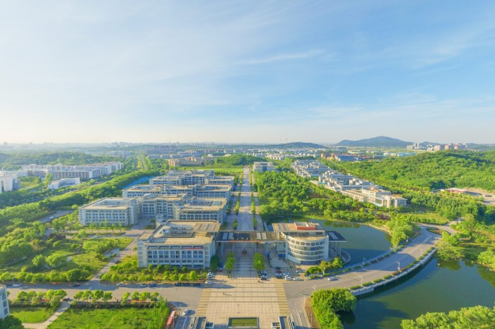

南京邮电大学校园专题地图

校园景色
由于Stadia Maps API到期，地图底图已经换成OSM Bright。
校园生活
由于Stadia Maps API到期，地图底图已经换成OSM Bright。
南京邮电大学是国家“双一流”建设高校和江苏高水平大学高峰计划A类建设高校，其前身是1942年诞生于八路军山东抗日根据地的战邮干训班，是我党、我军早期系统培养通信人才的学校之一。1958年经国务院批准改建为本科高校，取名南京邮电学院；2005年4月，更名为南京邮电大学。学校原为邮电部和信息产业部直属重点高校，2000年起实行中央与地方（现为工业和信息化部、国家邮政局与江苏省）共建，2017年入选国家首批“双一流”建设高校，2022年再次入选第二轮“双一流”建设高校。2013年10月，原南京人口管理干部学院正式并入南京邮电大学。学校秉承“信达天下 自强不息”的南邮精神，践行“厚德、弘毅、求是、笃行”的校训，发扬“勤奋、求实、进取、创新”的校风。
南京邮电大学仙林校区位于南京市栖霞区仙林大学城（文苑路9号），占地约2026亩，总建筑面积达56.76万平方米。作为学校的主校区，仙林校区环境优美，拥有现代化的教学设施和丰富的学院分布，是集教学、科研和生活于一体的综合性大学校园。校区交通便利，紧邻地铁1号线，为师生提供了便捷的出行条件。